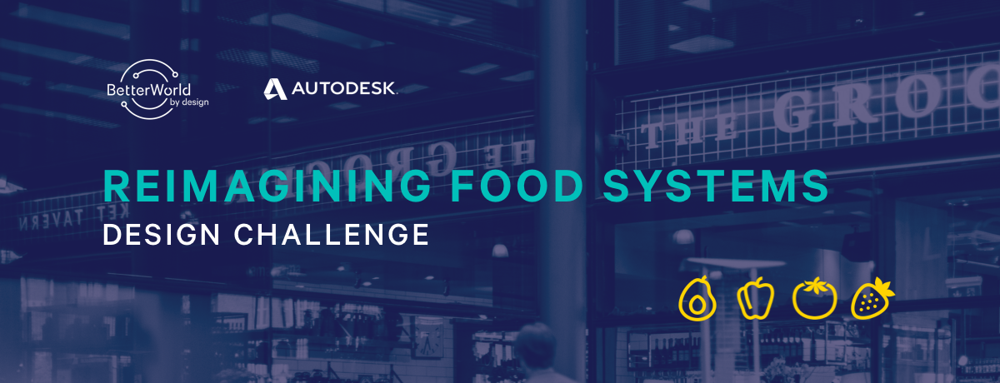
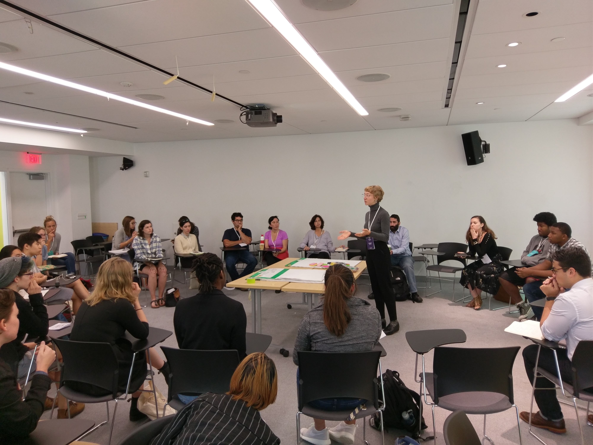
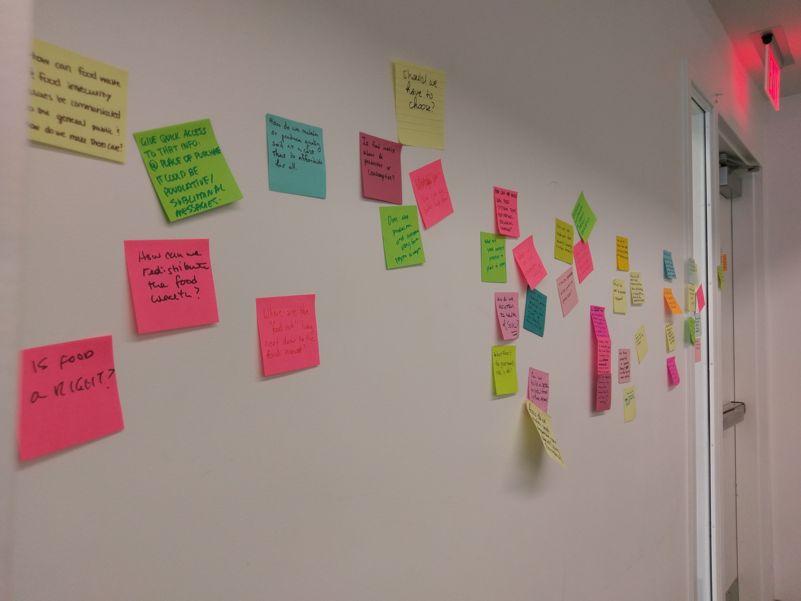

DESIGN CHALLENGE
Your challenge is to create a system, device, product, or other research- driven project that reimagines an interplay between humans and food on any or all of these scales: individual, communal, or global. Read guidelines below
AT THE CONFERENCE
This year, Better World is partnering with Autodesk Education to launch a design challenge with a prompt to re-imagine existing food systems and structures. This design challenge is open to students only.
At the conference we discussed the importance of innovation within the food industry at Saturday’s conversation with Lisa J. Raiola, founder of Hope & Main - a food incubator in Providence, Daniel Sheehan, a Rhode Island Food Policy Council (RIFPC) member and founder of Humble Pie Co., Megan Kelly, a member of Brown's Food Recovery Network - an organization attempting to close the gap between food waste and food insecurity by redistributing resources, and Kellan Hays, program manager at Autodesk and co-founder of Zasaka - a social enterprise that works with farmers and entrepreneurs in Zambia to increase incomes through agricultural training.
The panel explored what it means to reimagine food systems, in the particular context of each panelist. A multidisciplinary background and willingness to creatively organize resources where common themes. Access, food justice, community, and the importance of understanding how existing food systems function were discussed as critical components of successful food innovation.
Participants got the chance to interact with the panelists at a preceding workshop and brainstormed possible issues within existing food systems to reimagine.
Now that your brain juices are flowing, we bet you’re ready to reimagine food systems.
PROMPT
Your challenge is to create a system, device, product, or other research- driven project that reimagines an interplay between humans and food on any or all of these scales: individual, communal, or global.
You must be a college student (undergraduate or graduate) in order to participate. Groups of no more than 3 are welcome.
To generate an impactful design first you must make sense of the complexities which you are addressing. Begin by being inquisitive.
Here are some topics to fuel exploration into what Reimagining Food Systems means in an evolving world: Food deserts, Nutrition, Small scale farming, Food waste, Ethical trade, Land access, Supply for an increasing population, Sustainability, At risk pollinators, Food & culture, Dietary preferences, Human microbiota, Bio-Engineering…
Some more playful suggestions: Food presentation, Melted Ice-cream, Grocery shopping, Fridge-selection, Meatballs shaped like dinosaurs…
SUBMISSION GUIDELINES
Autodesk encourages you to take advantage of their CAD modelling software, Fusion 360, in your project submissions. If you’ve ever used Solidworks or Rhino, Fusion - like it’s conveniently named - is the best of both worlds in its capabilities. Fusion 360 is a cloud enabled CAD/CAM product design platform that allows you to go from concept to fabrication.
All projects, regardless of the use of Fusion 360, will be evaluated equally. Fusion 360 is available free for you to use for this challenge. Get started today at autodesk.com/workshop.
A proposal
What need does it address?
Explain to us the need you have identified, how you have addressed it, and why it matters.
High-level
What is your design?
Communicate–in whatever way you see fit–the most important aspects of your design. This could be a video, a poster, a comic strip, written documentation, a story, play-test, an interaction map, all of the above, or something else entirely. Think carefully about what is most important in understanding your design and deliver that as clearly and succinctly as you can.
Explanation of scope, intent, and impact
What is the interplay with existing food systems?
Your design does not exist in isolation. We ask that you deeply consider where it lives in pre-existing–or future–systems, what impact is has, on whom, and to what extent. Be far-sighted and consider the scope, intent, and impact of your design in as many contexts as you find relevant: individual, social, political, environmental, etc.. Walk through the entire lifecycle, and possible consequences, of your design. How might it look in the real world? Show us what your design looks like and how it might behave in the interplay of an ever-expanding world.
The story of your process–from concept to completion
How did you do it?
We encourage you to weave the process you undertook–from concept to completion–into a story that engages your audience in a compelling dialogue with your ideas and your experience. Convince us that you did the groundwork, understood the need, and devised a better world by design.
Final design imagery
How does it work?
A significant aspect of your design must be created or represented using the Fusion 360 tool. We ask that you submission includes detailed imagery which demonstrates the technical aspects of your design. In your submission we suggested you use key renders, images of mock-ups or sketch models, and prototypes (if relevant) to fully represent what you have created. You may also share the completed CAD files if you wish.
EVALUATION & PRIZES
Top Design
— $500
— Mentorship hours from Autodesk (10 hours)
— Tour of the Boston Autodesk Build Space
— Professional Critique / Feedback from Autodesk
— Swag Items
Honorable Mention
— $150
— Mentorship hours from Autodesk (5 hours)
— Swag Items
Best Use of Fusion 360
— $150
— Mentorship hours from Autodesk (5 hours)
— Swag Items
IMPORTANT INFO
Again, You must be a college student in order to participate. Groups of no more than 3 are welcome.
Please send submissions by November 15th through the provided Google form.
Evaluation results will be out the second week of December.
For all submissions we ask that you plan to provide a share link using Dropbox.
If your project is found with plagiarized content it will be disqualified from evaluation.
Incomplete submissions are welcome and will still be evaluated and any work that we find powerful is eligible to be shared to the BWxD community with your permission. However, prizes may not be eligible to incomplete submissions. All projects, regardless of the use of Fusion 360, will be evaluated equally.
Feel free to email challenge16@abetterworldbydesign.com with questions.
SUBMIT
DOWNLOAD FUSION360
DESIGN EXPO
Each year, Better World by Design hosts a Design Expo that takes place on the Saturday of the conference. The Expo is a space for companies, student groups and other local designers to showcase innovative projects, programs and more that help promote a more sustainable and just future. Thank you to all who attended at our 2016 conference!
Interested? Email community@abetterworldbydesign.com for more information.
VOLUNTEER
The Better World by Design conference couldn't run without volunteers! Join our community and hang out with us while you support events, contribute to social media, and continue awesome conversations. You’ll have plenty of time to attend presentations and workshops, mingle at social events, and make the most of our networking experiences. The best thing about being a volunteer? Volunteer, and we'll cover your conference registration free. Check back next year to join our team for 2017.
CONTACT
GENERAL INQUIRIES —
hello@abetterworldbydesign.com
PRESS —
pr@abetterworldbydesign.com
SOCIAL MEDIA
betterworldxdesign.tumblr.com
@betterworldbydesign
@betterxdesign
@betterxdesign